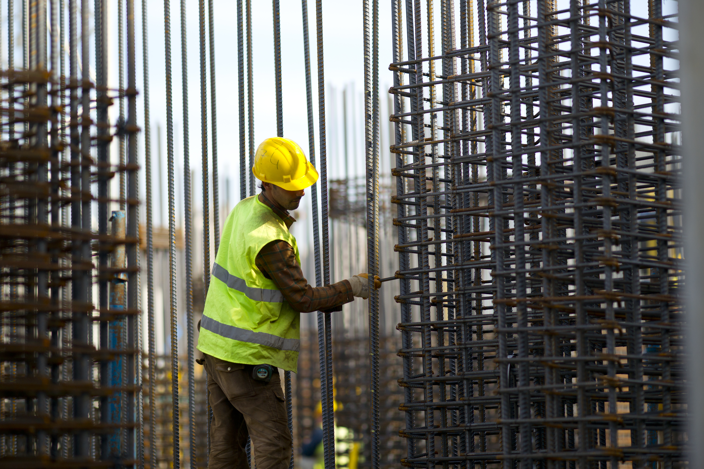

Lebih dari sekadar jasa konstruksi — kami membangun kepercayaan yang bertahan lama.

Malu Kontraktor adalah perusahaan jasa konstruksi yang berdiri sejak tahun 2014 dan berkedudukan di Denpasar, Bali.
Kami hadir sebagai mitra terpercaya dalam mewujudkan hunian dan bangunan impian Anda — dari renovasi skala kecil hingga pembangunan proyek komersial.
Dengan pengalaman lebih dari satu dekade melayani masyarakat Bali dan sekitarnya, kami mengedepankan kualitas pengerjaan, ketepatan waktu, dan kepuasan pelanggan sebagai fondasi utama setiap proyek yang kami tangani.
Menjadi perusahaan kontraktor terpercaya dan terdepan di Bali yang dikenal atas kualitas, integritas, dan dedikasi dalam setiap karya konstruksi.
Kami siap mendengarkan dan merancang solusi terbaik untuk setiap kebutuhan konstruksi Anda.